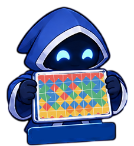
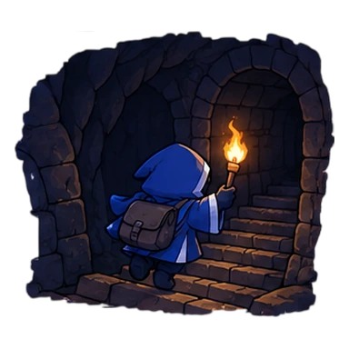
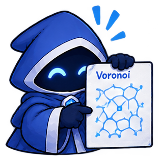
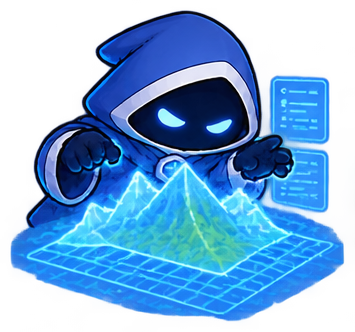
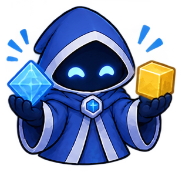
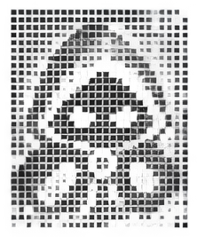

Приложения
Интерактивные демонстрации к занятиям.
Плитки Вана (Wang Tiles)
Простой ассоциативный алгоритм для построения структуры уровня.

Тема №1Генерация подземелий в Rogue
Изучи, как генерируются уровни в оригинальной Rogue 1980 года, и пройдись по готовому уровню!

Тема №2Диаграмма Вороного
Построй диаграмму Вороного по шагам, сгладь её релаксацией Ллойда и попробуй песочницу.

Тема №2Шум Перлина
Разберись, как из случайных градиентов получается плавный шум, и собери собственный ландшафт.

Тема №2Diamond-Square
Сгенерируй рельеф из четырёх углов: diamond- и square-шаги, карта высот и песочница.

Тема №2Игра «Жизнь»
Клеточный автомат Конвея: четыре правила, мигалки, планеры и песочница с колониями.
